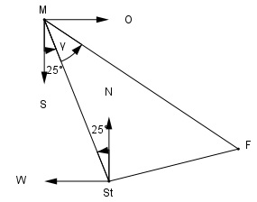

Aufgabe 198 Mainz ist von Stuttgart 150 km und von Freiburg 225 km entfernt.Freiburg von Stuttgart 130 km. Mainz liegt von Stuttgart aus in Richtung N 25° W. In welcher Richtung liegt Freiburg von Mainz aus?

Fall SSS: Cosinussatz: StF2 = StM2 + FM2 - - 2 * StM * FM * cos γ | +2 * StM * FM * cos γ StF2 + 2 * StM * FM * cos γ = StM2 + FM2 |-StF2 2 * StM * FM * cos γ = = StM2 + FM2 - StF2 |:2 * StM * FM StM2 + FM2 - StF2 cos γ = --------------------- = 2 * StM * FM 1502 km2 + 2252 km2 - 1302 km2 = --------------------------------- = 2 * 150 km * 225 km = 0,833 --> γ = 33,6° Freiburg liegt von Mainz aus in Richtung S (25° + 33,6°) O --> S 58,6° O